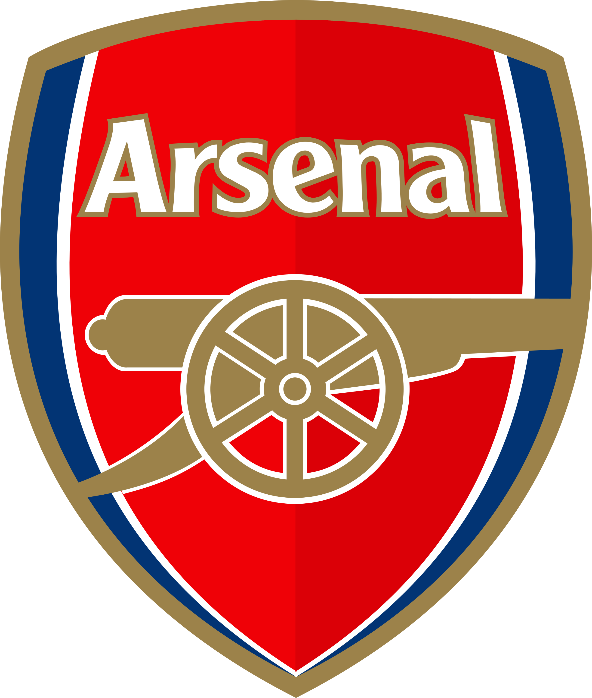

Добро пожаловать на сайт футбольных тактик!
Этот сайт посвящён анализу и созданию футбольных тактик с акцентом на клуб Арсенал. Здесь вы найдёте красивые схемы, фотографии и сможете создать свою собственную тактику прямо на поле! Действуйте сейчас!
